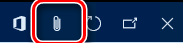

Work with the Electronic messages functionality
[!include[banner](../includes/banner.md)]If you're working at the message level, the Electronic messages page (Tax > Inquiries and reports > Electronic messages > Electronic messages) is more useful. If you're working at the data collection or message item level, the Electronic message items page (Tax > Inquiries and reports > Electronic messages > Electronic message items) is more useful.
Electronic messages
The Electronic messages page presents the processing that is available to you, based on your role. Security roles are associated with processing in the setup of that processing. For each processing that is available to you, the page shows electronic messages and information that is related to them.
The Messages FastTab shows electronic messages for the selected processing. Depending on the status of the selected message and predefined processing, you can run some actions by using the buttons above the grid:
- New – This button is associated with actions of the Create message type.
- Delete – This button is available if the Allow delete checkbox is selected for the current status of the selected message.
- Collect data – This button is associated with actions of the Populate records type.
- Generate report – This button is associated with actions of the Electronic reporting export message type.
- Send report – This button is associated with actions of the Web service type.
- Import response – This button is associated with actions of the Electronic reporting import type.
- Update status – This button is associated with actions of the Message level user processing type.
- Message items – Open the Electronic message items page.
The Action log FastTab shows information about all the actions that have been run for the selected message. If an action caused an error, information about the error is attached to the related line in the grid. To review the information about the error, select the line in the grid, and then select the Attachment button (paper clip symbol) in the upper-right corner on the page.
The Message additional fields FastTab shows all the additional fields that are defined for messages in the processing setup. The FastTab also includes the values of those additional fields.
The Message items FastTab shows all the message items that are related to the selected message. Depending on the status of the selected message item, you can run some actions by using the buttons above the grid:
- Delete – This button is available if the Allow delete checkbox is selected for the current status of the selected message item.
- Update status – This button is associated with actions of the User processing type.
- Original document – Open a page that shows the original document for the selected message item.
The reports that have already been generated and received for a message are attached to that message. To review the attachments related to a message, select the message, and then select the Attachment button (paper clip symbol) in the upper-right corner of the page.

The Attachments page shows the attachments that are related to the selected message. To view a file, select it in the list on the left, and then, on the Action Pane, select Open.

You can review attachments that are related to a specific action that was previously run for a message. On the Electronic messages page, on the Messages FastTab, select the message. On Action log FastTab, select the action, and then select the Attachment button (paper clip symbol) in the upper-right corner of the page.
You can run the whole processing or just a specific action by selecting Run processing on the Action Pane.
Electronic message items
The Electronic message items page shows all message items and a log of the actions that have been run for each message item. The page also shows the additional fields that are defined for the message items, and the values of those additional fields.
The following table describes the fields on the Message items tab.
| Field | Description |
|---|---|
| Processing | The name of the processing that was used to create the message item. |
| Message item | The ID of the message item. This ID is automatically assigned, based on the Message item number sequence that is defined on the General ledger parameters page. |
| Message item date | The date when the message item was created. |
| Message item type | The type of message item. Several types of messages items can be set up for the same processing (for example, Incoming invoices and Outgoing invoices). This field can be automatically set only when an invoice is added to the Message items table. |
| Message item status | The actual status of the message item. The available statuses vary, depending on the type of message item. Here are some examples:
|
| Transmission date | For processing that automatically transmits a generated report outside the system, the date when the message item was transmitted. |
| Document number | This field is automatically set, based on the setup of the populate records action. This field can be automatically set only when an invoice is added to the Message items table. |
| Account number | The account number of a customer or vendor, or another field value, depending on the field that is defined on the populate records action. This field can be automatically set only when an invoice is added to the Message items table. |
| Message | The number of the message. This number is automatically assigned, based on the Message number sequence that is defined on the General ledger parameters page. |
| Message status | The actual status of the electronic message. |
| Next action | The next actions that can be started for the current status of the message item. |
The Additional fields tab shows the additional fields for the selected message item, and their values.
Run processing
On the Action Pane, select Run processing to run the processing for message items. To run a specific action, in the Run processing dialog box, set the Choose action option to Yes, and then select an action. To run the whole processing, leave the Choose action option set to No.
Generate report
On the Action Pane, select Generate report. This button is associated with actions of the Electronic reporting export type.
Update status
On the Action Pane, select Update status to update the status of one or more message items. In the Update status dialog box, use the Records to include FastTab to select the message items to update. Make sure that you correctly define the selection criteria, because message item statuses will be updated according to these criteria, the initial status of the selected action, and the value that you specify in the New status field. After a status update is completed, it will be difficult to determine which items were updated. Therefore, it will be difficult to roll back the status update.
Electronic messages
On the Action Pane, select Electronic messages to review an electronic message that is related to the selected message item.
You can also review the files that are related to a specific message item. Select the Message field for the message item or, on the Action Pane, select Electronic messages. On the Electronic message page, select the message to review files for, and then select the Attachment button (paper clip symbol) in the upper-right corner of the page.
The Attachments page shows the attachments that are related to the message. To view a file, select it in the list on the left, and then select Open on the Action Pane.
Original document
On the Action Pane, select Original document to open the original document for the selected message item.